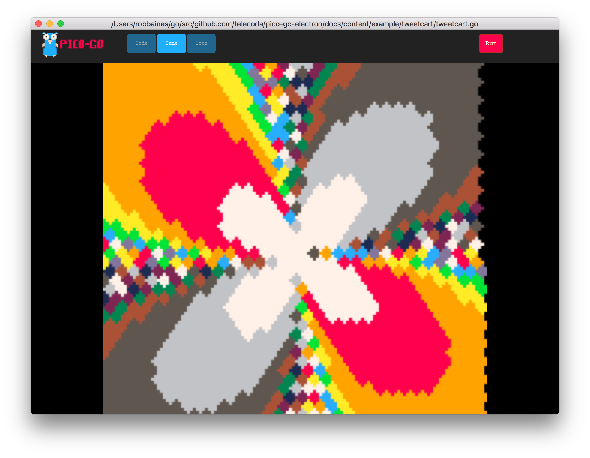

tweetcart
tweetcart
This is an example of a tweetcart animation. Tweetcarts are animations where the code should be able to fit within the size of a single tweet.
This tweetcart is based upon a pico8 tweetcart from here
example output

sourcecode
package main
/*
This is a simple demo project to show you how to use pico-go
Copyright 2018 @telecoda
*/
import (
"math"
"github.com/telecoda/pico-go-electron/console"
)
const (
// set console type to one of the predefined consoles
consoleType = console.PICO8
// define these vars to be used in javascript canvas scaling code
screenWidth = 128
screenHeight = 128
)
type cartridge struct {
*console.BaseCartridge
}
// Init - called once
func (c *cartridge) Init() error {
go c.renderLoop()
return nil
}
func (c *cartridge) renderLoop() {
/*
From this Tweet:
https://twitter.com/Gozilu/status/1055212980164587520
t=0
::_::
cls()
t+=.1
for y=-64,64,3 do
d=2*(y%2)
for x=-64+d,64+d,4 do
a=atan2(x,y)
r=sqrt(x*x+y*y)/128
c=4*r/sin(r/4+a*2-t/10)
circfill(x+64,y+64,2,7+c%7)
end
end
flip()
goto _
*/
t := 0.0
for {
c.Cls()
t += 0.1
for y := -64; y < 64; y += 3 {
d := 2 * (y % 2)
for x := -64 + d; x < 64+d; x += 4 {
a := math.Atan2(float64(x)*math.Pi*2, float64(y)*math.Pi*2)
r := math.Sqrt(float64(x*x+y*y)) / 128
col := int(4 * r / math.Sin(r/4+a*2-t/10*math.Pi*2))
c.CircleFill(x+64, y+64, 2, console.ColorID(7+col%7))
}
}
c.Flip()
}
}
// Update - called once every frame
func (c *cartridge) Update() {
}
// Render - called once every frame
func (c *cartridge) Render() {
}